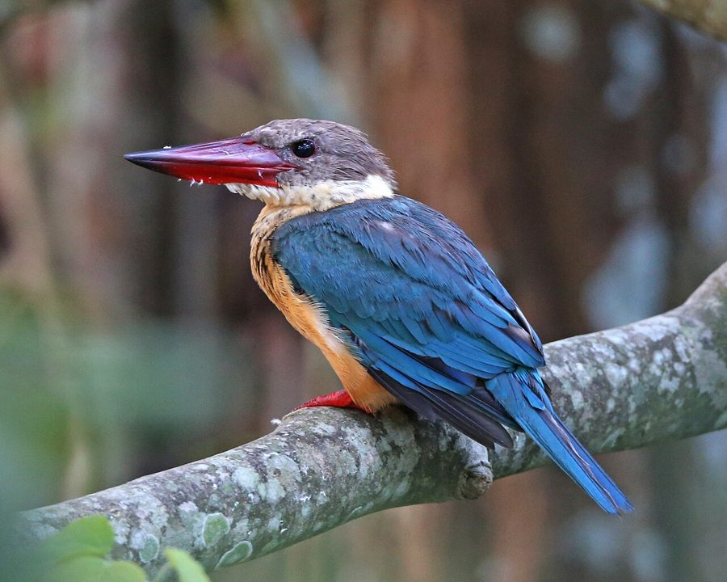

स्टॉर्क-बिल्ड किलकिलाStork-billed Kingfisher
Pelargopsis capensis · Alcedinidae · BRD-0268

- Scientific name वैज्ञानिक नाम
- Pelargopsis capensis (Linnaeus, 1766)
- Family कुल
- Alcedinidae
- Hindi हिंदी
- स्टॉर्क-बिल्ड किलकिला
- Local names स्थानीय नाम
- stork-billed kingfisher, stork billed kingfisher, kingfisher
- Status here यहाँ की स्थिति
- native
- Movement आवागमन
- Resident, here all year
- Known from कहाँ दर्ज
- Others have published records from the Basti–Ayodhya districts बस्ती–अयोध्या के ज़िलों से दूसरों के प्रकाशित अभिलेख
- IUCN IUCN
- LC
- Review समीक्षा
- audited and independently read
When to look कब देखें
Present all year. साल भर मौजूद।
Tell it apart from इनसे अलग पहचानें
स्टॉर्क-बिल्ड किलकिला / Stork-billed Kingfisher
Pelargopsis capensis (Linnaeus, 1766) — Alcedinidae
स्टॉर्क-बिल्ड किलकिला — भारत की सबसे बड़ी मछली-मारने वाली चिड़िया, जिसकी चोंच सारस (स्टॉर्क) जैसी बड़ी और लाल होती है। नदियों और बड़ी झीलों के किनारे एकेले रहती है। यह अपनी बड़ी चोंच से बड़ी मछलियों को पकड़ता है।
Quick Identification त्वरित पहचान
| Feature | Description |
|---|---|
| Size | 45–46 cm; largest kingfisher in region |
| Overall colour | Reddish-chestnut upper parts; white or pale underparts |
| Head | Chestnut; prominent crest |
| Bill | Enormous, straight, bright red or orange-red |
| Tail | Long, chestnut with darker bands |
| Legs | Short, red |
| Behaviour | Solitary; perches on branches over water |
| Call | Loud, harsh kicking or cackling |
Field tip: The largest kingfisher in eastern UP, unmistakable with its enormous bright red bill and chestnut plumage. Sits alone on branches overhanging rivers or lakes, watching for fish. Dives suddenly into water with a splash. Very territorial; stays in the same stretch of river for months.
हिंदी — कैसे पहचानें:
भारत की सबसे बड़ी मछली-शिकारी।
लाल, बहुत बड़ी चोंच।
नदी के किनारे अकेली बैठी रहती है।
जोर से आवाज़ करती है।
Morphology आकारिकी
Biometrics:
| Measurement | Range |
|---|---|
| Total length | 450–460 mm |
| Wing (flattened chord) | 190–210 mm |
| Tail | 90–110 mm |
| Bill (culmen) | 75–90 mm |
| Weight | 340–450 g |
Size: 45–46 cm long. The largest kingfisher species in the Indian subcontinent.
Plumage: Reddish-chestnut or rufous-brown above, including crown, back, wings, and tail. Underparts pale buff or whitish, particularly on the belly and undertail coverts. Feathers of the tail show darker barring.
Head: Distinctive prominent crest of chestnut feathers, raised when alert. Face and lores pale buff.
Bill: The hallmark feature: enormous, straight, powerful, and bright red or orange-red. Culmen (upper edge) measured up to 90 mm. Adapted for stabbing and holding large fish.
Wings: Chestnut with darker feather edges; rounded in shape, suitable for manoeuvring through riverside vegetation.
Tail: Long, chestnut-brown with darker barring; used for balance when hovering.
Legs and feet: Short, red or orange-red; typical of kingfishers, with syndactyl feet (two toes fused).
Eyes: Dark, positioned high on head for aquatic vision.
Sexes: Monomorphic or very slightly dimorphic; females marginally larger.
Juveniles: Duller than adults; crest less prominent; bill somewhat paler.
Vocalisations. Call repertoire:
- Territorial call: Loud, harsh k-k-k-k or cackling, repeated in series, given from perch.
- Alarm call: Sharp, rattling crek-crek-crek.
- Song: Seldom heard; soft whistling notes during courtship.
हिंदी: तेज, कड़क आवाज़ करता है। "क-क-क" जैसी आवाज़।
Behaviour & Ecology व्यवहार और पारिस्थितिकी
Specialist piscivore: Stork-billed Kingfisher feeds exclusively on fish and occasionally aquatic crustaceans and frogs. It hunts by perching on branches overhanging water, watching intently for movement below, then diving suddenly and powerfully. Typical hunting dives last 1–2 seconds and are highly successful (success rate often above 50%).
Territorial behaviour: Highly territorial and solitary. Pairs remain together year-round, defending stretches of river (typically 500–1000 m). Territorial disputes involve loud vocalizations and aerial chases.
Habitat specificity: Requires clear, flowing or still water bodies with overhanging branches for perching. Avoids densely vegetated waterways or those with heavy silt.
Daily activity: Crepuscular (most active at dawn and dusk), but hunt throughout the day during good weather. Reduced activity during heavy rain or floods.
Breeding and nesting: Excavates deep burrows in riverbanks or steep earth banks. Typically nests above the water to reduce flooding risk. Breeding season February–May in eastern UP.
Predators: Raptors including and Pied Harrier. Eggs and chicks vulnerable to monitor lizards, jackals, and ravens.
हिंदी: अकेले शिकार करता है। नदी के एक ही हिस्से में साल भर रहता है। बड़ी, तेजी से उड़ने वाली मछलियाँ पकड़ता है।
Life Cycle / Phenology जीवन चक्र
| Event | Timing |
|---|---|
| Pair bonding | January–February |
| Burrow excavation | February–March |
| Egg-laying | March–April |
| Incubation | 24–26 days |
| Chick-rearing | 37–40 days |
| Fledging | April–May |
| Juvenile independence | June–July |
| Territory establishment | Year-round; new territories formed by yearlings |
हिंदी: सर्दियों में जोड़े बनते हैं। गर्मियों में अंडे देते हैं। चूजे बरसात में बड़े होते हैं।
Host Plants or Prey आहार
| Prey Type | Size | Hunting Behaviour |
|---|---|---|
| Fish | 3–25 cm | Dive from perch; catch with powerful bill |
| Freshwater crustaceans | Small | Glean from shallows |
| Aquatic frogs | Small species | Opportunistic |
हिंदी: बड़ी मछलियाँ खाता है। कभी केकड़े भी। पानी में डुबकी लगाकर पकड़ता है।
Predators / Natural Enemies शत्रु
- Avian predators: Pied Harrier
- Nest predators: Monitor lizard, jackal, Jungle Crow, raven
- Parasites: Aquatic parasites, blood parasites (unquantified)
हिंदी: बड़ी चिड़ियाँ और जंगली जानवर खतरा हैं। अंडों को सांप और गोह खाते हैं।
Agricultural / Human Relevance कृषि प्रासंगिकता
Fish predation. In regions with active aquaculture or fisheries, Stork-billed Kingfishers are sometimes seen as pests due to predation on farmed fish. However, in natural river systems, they consume mainly small, non-commercial species and provide ecological balance.
Protected species. Protected under the Wildlife (Protection) Act 1972. Hunting is strictly illegal.
Cultural significance: Revered in many traditions as a symbol of fishing prowess and determination. Featured in ancient texts on hunting and wildlife.
Indicator species. The presence of Stork-billed Kingfishers indicates healthy river conditions, clean water, and adequate fish populations. Their presence or absence is a good indicator of river health.
हिंदी: नदी की सफ़ाई का संकेत है। कानून से पूरी तरह सुरक्षित है। इसका शिकार करना गैरकानूनी है।
Expected Locally स्थानीय रूप से अपेक्षित
Not a field record. Written from published accounts for eastern Uttar Pradesh. No confirmed local sighting yet — if you have seen it, that is what the atlas needs.
अभी तक स्थानीय पुष्टि नहीं। यह विवरण प्रकाशित स्रोतों से है, किसी अवलोकन से नहीं।
This species is NOT a field record. The distribution below is based on published sources describing where Stork-billed Kingfisher should be looked for in the Basti–Ayodhya region.
Habitat expectation: Expected in stretches of the Ghaghra, Rapti, and Gomti rivers, particularly where there are overhanging trees and clear water. Also in large tanks and reservoirs with suitable nesting banks.
Habitat specificity: Requires clear, flowing water with overhanging vegetation and suitable high banks for burrow nesting. Avoids heavily silted or turbid water.
Seasonal variation: Present year-round but more visible and vocal during breeding season (February–May).
GBIF records: GBIF holds published records from the wider Awadh–Purvanchal plain, none yet from Basti–Ayodhya.
What a first record would be: A photograph or video clearly showing the distinctive red bill and chestnut plumage of a bird in a specific river location (GPS and date), submitted through the About page. Sighting near active nesting burrows is particularly valuable.
हिंदी: यह पक्षी स्थानीय रूप से अपेक्षित है, न कि देखे गए बतौर प्रेक्षण। घाघरा और राप्ती नदियों के साफ़ हिस्सों में देखे जा सकते हैं। पहला रिकॉर्ड के लिए स्पष्ट फोटोग्राफ और तारीख चाहिए।
Distribution वितरण
Global range: South and Southeast Asia from the Indian subcontinent through Myanmar, Thailand, Laos, Cambodia, and Vietnam to southern China.
In India: Distributed along major river systems and wetlands in the peninsular and northern regions.
In Uttar Pradesh: Occurs along the Ganga, Gomti, Ghaghra, and Rapti river systems.
In Basti district / eastern UP: Expected along stretches of the Ghaghra and Rapti rivers with suitable habitat (overhanging trees, clear water, suitable nesting banks).
Research Questions शोध प्रश्न
- How many Stork-billed Kingfisher territories exist in the Ghaghra-Rapti system, and how stable are pair bonds across years?
- What is the home range and foraging distance from nests for breeding pairs?
- क्या नदियों में पानी की मैलापन इस चिड़िया के शिकार की कामयाबी को प्रभावित करता है? (Does water turbidity affect hunting success?)
- What fish species are most frequently consumed, and how does diet vary seasonally?
- Are there seasonal variations in nesting site selection (height above water, substrate type)? (Measure burrow characteristics annually.)
- क्या जलाशयों से जल निकासी इस चिड़िया के प्रजनन को प्रभावित करती है? (Does water release from reservoirs affect breeding?)
Similar Species मिलती-जुलती प्रजातियाँ
| Species | Key Difference | हिंदी | Field Rule | |
|---|---|---|---|---|
| White-breasted Kingfisher (Halcyon smyrnensis) | Much smaller (28 cm); blue-green above, white below; different bill shape | नीली मछली-शिकारी | White-breasted Kingfisher is much smaller, less than half the size; different colour pattern. | |
| [[common_kingfisher\ | Common Kingfisher]] (Alcedo atthis) | Tiny (16–17 cm); iridescent blue above, orange-rufous below | छोटी नीली मछली-शिकारी | Common Kingfisher is tiny, one-third the size of Stork-billed. |
Field rule: A very large kingfisher (45–46 cm) with an enormous bright red bill and reddish-chestnut plumage is unmistakably a Stork-billed Kingfisher. No other kingfisher in the region is remotely this large or has this distinctive bill.
Taxonomy & Classification वर्गीकरण
Original description. Described by Linnaeus in 1766 in the 12th edition of Systema Naturae as Alcedo capensis. Type locality: Cape of Good Hope, South Africa (now a museum specimen from that region, though the species' actual range is Asian).
Subspecies. Two subspecies are recognised:
- P. c. capensis Linnaeus, 1766 — South Asia (occurs in India and Uttar Pradesh)
- P. c. minor Chasen & Kloss, 1932 — Southeast Asia (Malaysia, Thailand, Indochina)
Family and order placement. Order Coraciiformes; family Alcedinidae (true kingfishers). The genus Pelargopsis contains only this species.
Phylogenetic notes. Pelargopsis capensis is phylogenetically distinct among kingfishers, placed in a monotypic genus. Relationships to other kingfisher groups are still being refined.
IUCN status rationale. Least Concern globally. Populations are stable across a wide range, and the species is adapted to a variety of riverine habitats. Protected under the Wildlife (Protection) Act 1972. No major threats in most of its range, though river degradation (pollution, dam construction) poses local risks.
हिंदी: यह एशिया में पाया जाता है। कानून से पूरी तरह सुरक्षित है। नदी की सेहत का संकेत है।
Photo Gallery फोटो गैलरी
No photos yet — add field photos to media/species/stork_billed_kingfisher/ and run node scripts/sync_photos.js.
Wanted photos:
- Perching on branch overhanging river (showing red bill and chestnut plumage)
- Close-up of head showing distinctive crest and large red bill
- Diving or entering water
- At nesting burrow on riverbank
- With fish catch
- In flight showing wing pattern
References संदर्भ
- Linnaeus, C. (1766). Systema Naturae per Regna Tria Naturae, editio duodecima, reformata. Laurentii Salvii, Holmiae. Vol. 1, p. 182.
- Ali, S. & Ripley, S.D. (1968). Handbook of the Birds of India and Pakistan, Vol. 1 (Divers to Hawks). Oxford University Press, Delhi. Pp. 428–431.
- Grimmett, R., Inskipp, C. & Inskipp, T. (2011). Birds of the Indian Subcontinent (2nd edn). Oxford University Press. P. 238.
- Chasen, F.N. & Kloss, C.B. (1932). The birds of the Natuna Islands. Bulletin of the Raffles Museum, 7: 5–82.
- Birdlife International (2023). Pelargopsis capensis — IUCN Red List assessment. Status: Least Concern.
- GBIF Occurrence Data — Pelargopsis capensis, India.
Source file: species/fauna/birds/stork_billed_kingfisher.md